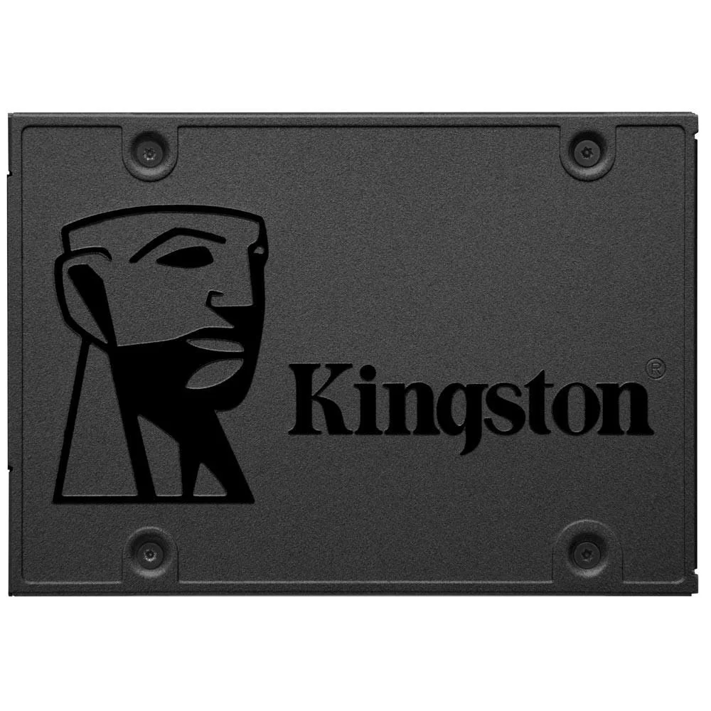
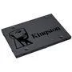
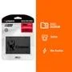
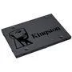
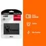

 



SSD Kingston A400, 240GB, SATA III, 2.5", Leitura: 500MB/s, Gravação: 350MB/s, Preto - SA400S37/240G
Vendido e entregue por UniPeças
R$ 450,00
R$ 240.00
ou 10x de R$ 16,99 sem juros
Sobre o produto
- Especificações Técnicas: Interface SATA Rev. 3.0 (6Gb/s) para transferência de dados veloz, operando com memória NAND TLC
- Compatibilidade: Formato de 2,5 polegadas, compatível com SATA Rev. 2.0 (3Gb/s), ideal para diversos sistemas
- Performance e Benchmarks: Velocidade de leitura até 500MB/s e gravação até 350MB/s, otimizando o desempenho do sistema
- Recursos Avançados: Resistência a vibrações e choques, assegurando durabilidade em uso móvel
✅ Em estoque